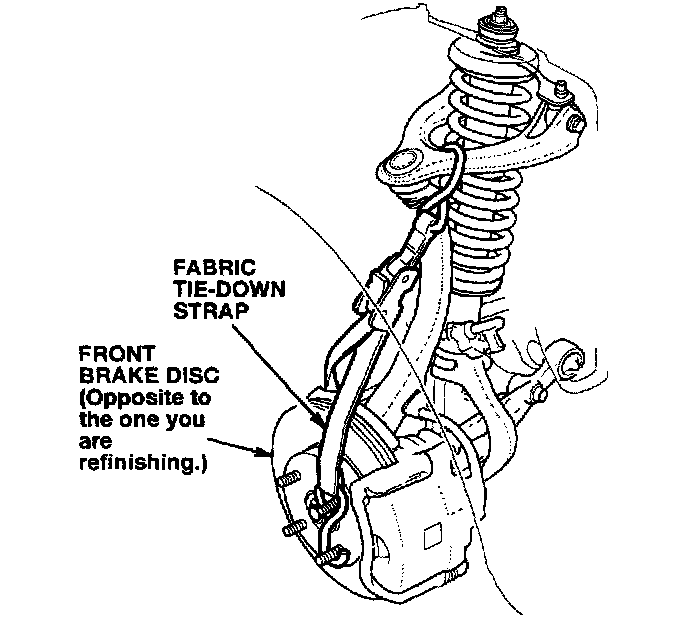
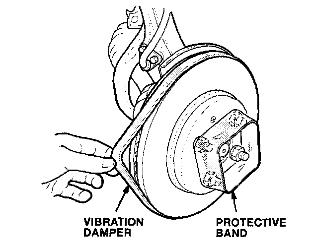
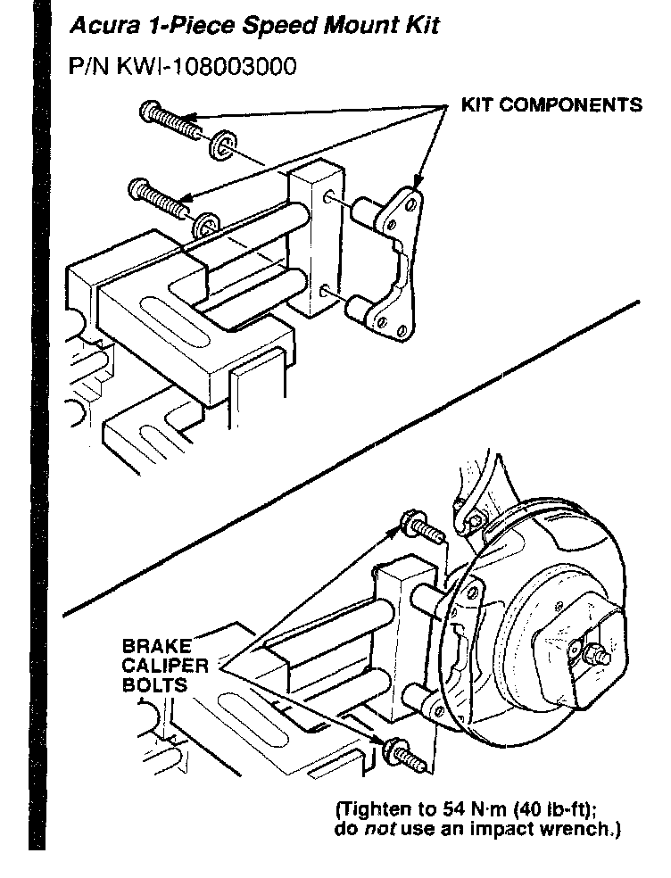
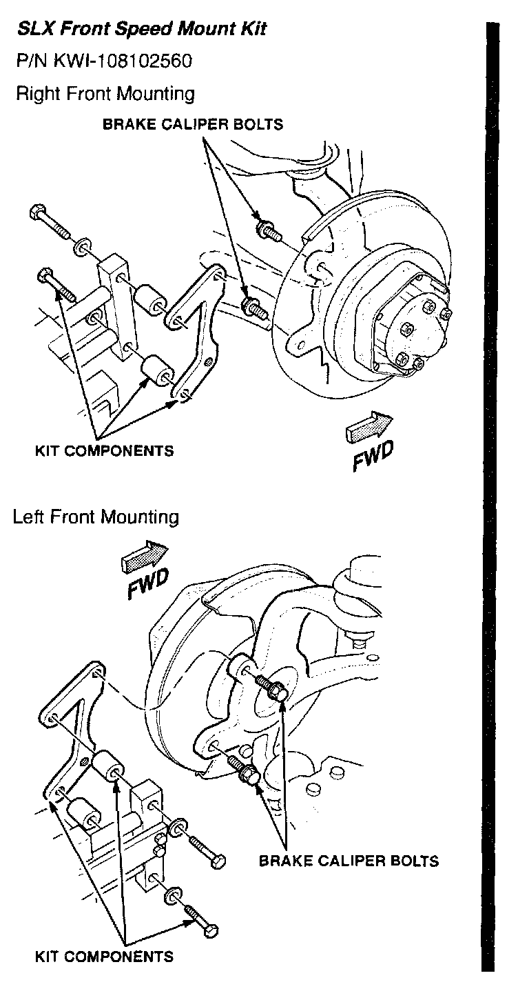
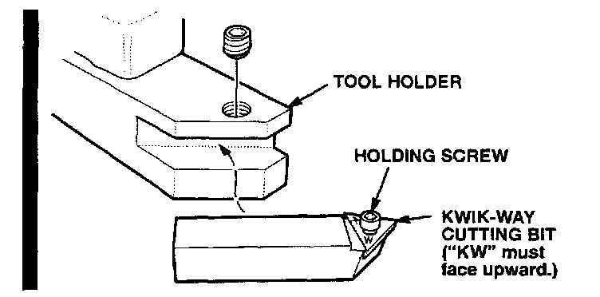
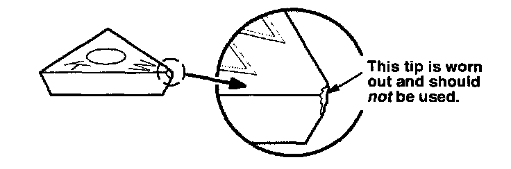
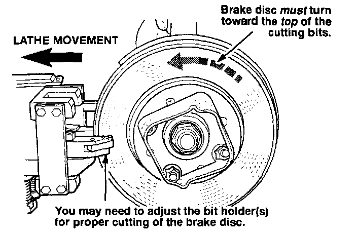
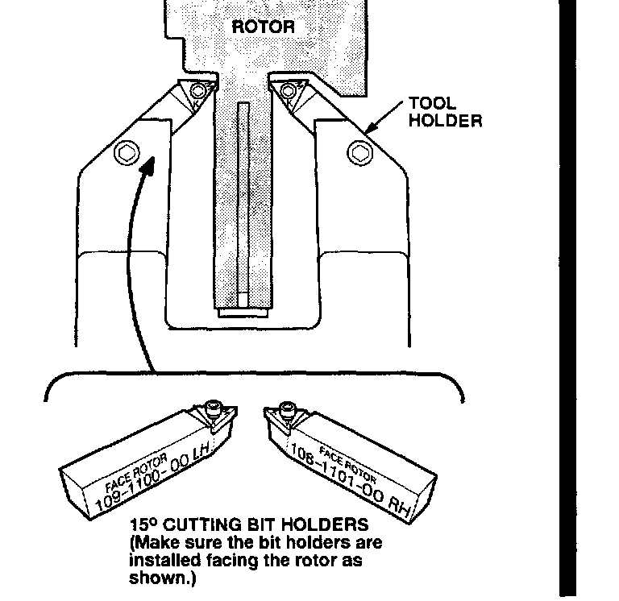
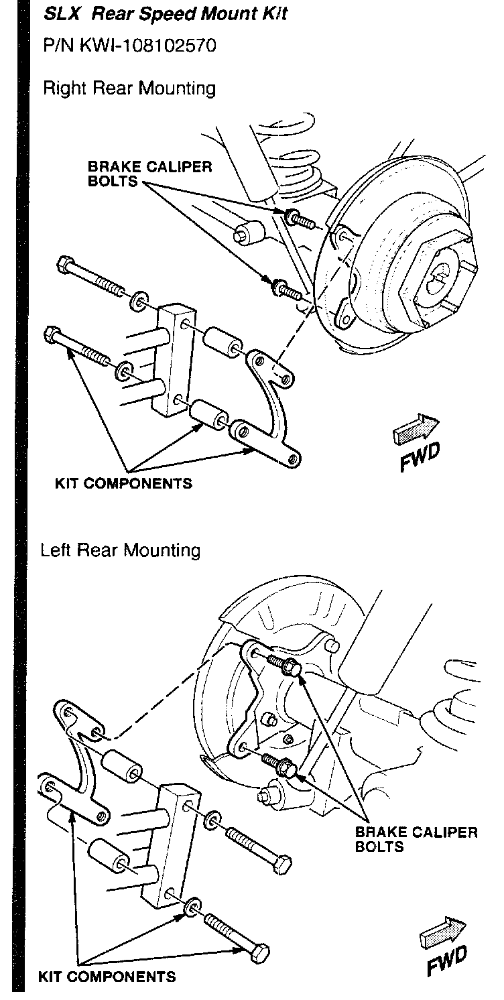

Brakes - Brake Disc Refinishing Guidelines
86-014June 7, 1999
Brake Disc Refinishing Guidelines
(Supersedes 86-014, dated August 24, 1998)
** Indicates updated information **
Black bars in illustrations indicate updated information.
Brake disc replacement under warranty is not allowed unless the brake disc is beyond its maximum refinishing limit. If a brake disc is within its limit, it must be refinished. To find the specifications for maximum refinishing limits, refer to section 19 of the appropriate service manual (section 5 for the SLX).
WARRANTY CLAIM INFORMATION
None; information only.
FRONT BRAKE DISCS
Whenever a front brake disc is replaced on an affected vehicle, it must be refinished on the vehicle. Time for refinishing new front brake discs is included in the flat rate time for brake disc replacement.
To avoid brake vibration, do not refinish front brake discs off the vehicle. Always refinish front brake discs on the vehicle with the Kwik-Way brake lathe.
Ordering Information
To order this brake lathe and its component parts, contact the Acura Tool and Equipment Program at 1-888-424-6857. Phone lines are open Monday through Friday from 7:30 a.m. to 7:00 p.m. CT.
Refinishing Tips
Follow these tips to get the best results from your Kwik-Way brake lathe. (For detailed instructions, refer to the operating manual for the brake lathe.)
Before refinishing, warm up the engine to its normal operating temperature.
On FWD vehicles, lift both front wheels off the ground.
On the SLX, lift all four wheels off the ground.
On the SLX, make sure the hub nut is properly adjusted
(with no end play) and the transmission is in 4H.

** On 1999 3.2TLs, make sure the Traction Control System (TCS) is turned off. On all vehicles, use a fabric tie-down strap to secure the brake disc that is opposite to the one you are refinishing. **
Reinstall the wheel lug nuts, and torque them to the required torque specification (see the appropriate service manual).
** Remove the caliper assembly. Use a wire or S-hook to secure the caliper to the spring or shock tower. Do not kink the brake hose or use it to support the caliper. On 1999 3.2TLS, make sure you install a brake pad spreader. **

Install the vibration damper onto the brake disc, and install the protective band around the wheel lug nuts.


** Mount the brake lathe to the steering knuckle with an Acura 1-Piece Speed Mount Kit (all models except NSX and SLX) or the SLX Front Speed Mount Kit (SLX only). These kits provide quicker, more accurate mounting. They can be ordered through the Acura Tool and Equipment Program (see Ordering Information). **

Use Kwik-Way cutting bits, P/N KWI-109109223, and the holding screws that come with them. These bits are stamped "K W" and are available through the Acura Tool and Equipment Program (see Ordering Information) or from American Honda using the normal parts ordering procedures.

Before you use the brake lathe, inspect the tips of the cutting bits with a magnifying glass to make sure the tips are not worn out. Each bit has three tips.
**To obtain the smoothest cut and the best brake disc finish, always use the slowest feed speed on the power feed unit. Place the drive belt on the smallest pulley of the motor and on the largest pulley of the feed wheel. **

For proper refinishing, the brake disc must always turn toward the top of the cutting bits. Make sure the transmission is in first gear or reverse and the engine is idling, but not at a fast idle. If the transmission and engine are at higher gears and speeds, you will damage the cutting bits.
Do not set the cutting depth on the brake lathe to more than 0.2 mm (0.008 in.). This is two divisions on the cutting knob. Make sure you start your cut at least 3 mm (0.12 in.) past the worn area of the brake disc.

** If you are cutting a larger diameter rotor such as that used on 1986-90 Legends, make sure you use the 150 cutting bit holders. These bit holders supersede the original bit holders and provide better cutting coverage for larger diameter rotors. Each bit holder is clearly marked for proper installation on the tool holder. **
REAR BRAKE DISCS
All Models Except NSX and SLX:
Refinish the rear brake discs off the vehicle using conventional brake disc refinishing equipment.

SLX Only:
Refinish the rear brake discs on the vehicle using the SLX Rear Speed Mount kit (P/N KWI-108102570), or refinish them off the vehicle.

Disclaimer